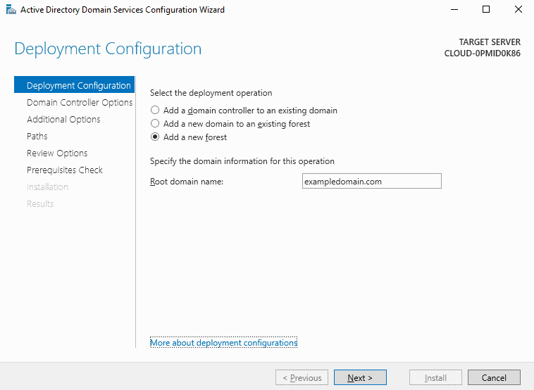
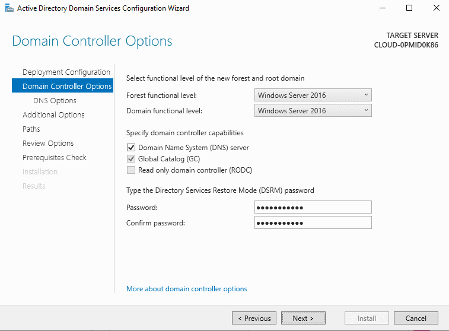
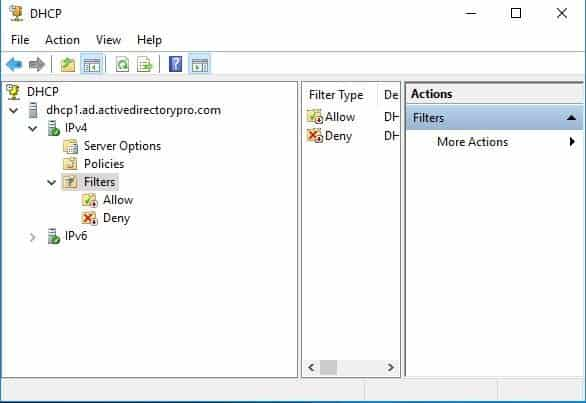
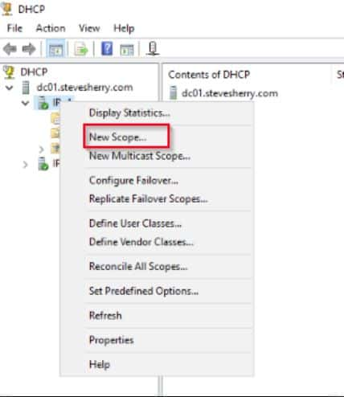
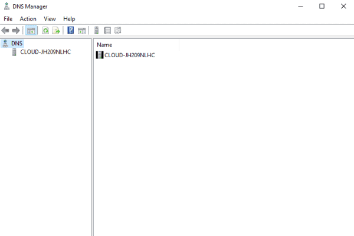
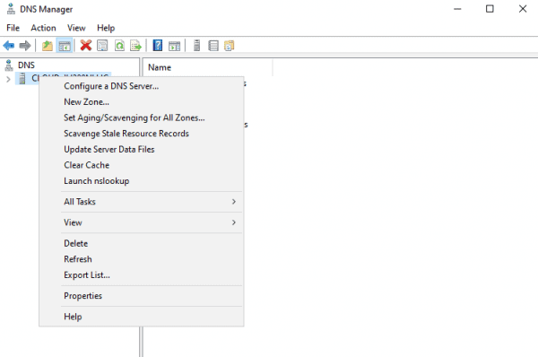
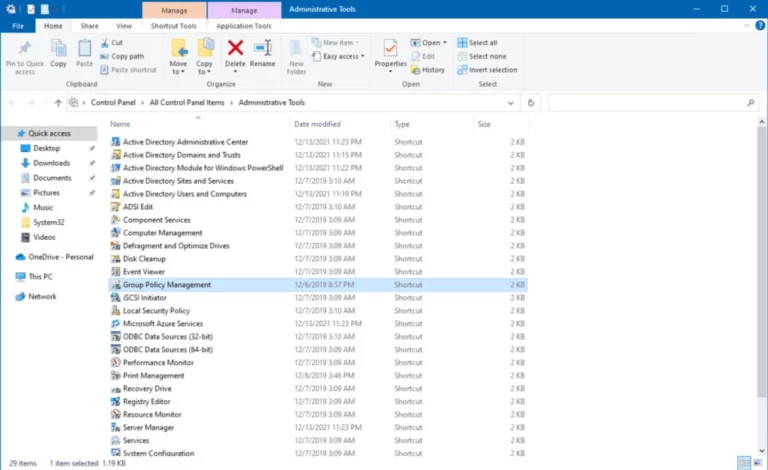
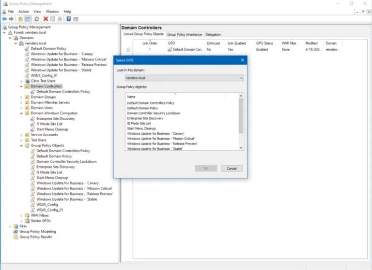

Infrastructure
Windows Server
Mise en place d'un environnement Windows Server complet en virtualisation : Active Directory, DHCP, DNS et Stratégies de groupe (GPO).
Contexte
Pourquoi mettre en place un Windows Server ?
Dans un réseau d'entreprise, un serveur Windows joue un rôle central : il gère les comptes utilisateurs, distribue les adresses IP, résout les noms de domaine et applique des politiques de sécurité à l'ensemble des machines. Pour comprendre ces mécanismes en profondeur, j'ai déployé un lab complet en virtualisation avec VirtualBox.
L'environnement se compose d'un serveur Windows Server 2022 (contrôleur de domaine) et de plusieurs postes clients Windows 10/11 reliés au domaine. Cela permet de tester et comprendre la gestion centralisée d'un parc informatique, comme en entreprise.
Active Directory DS
Promotion du serveur en contrôleur de domaine
La première étape consiste à installer le rôle AD DS (Active Directory Domain Services) via le Gestionnaire de serveur, puis à promouvoir le serveur en contrôleur de domaine. On crée un nouveau domaine (ex. : lab.local) avec un mot de passe de restauration des services d'annuaire (DSRM).
- Forêt et domaine — création d'une nouvelle forêt Active Directory avec un domaine racine.
- Niveau fonctionnel — paramétrage du niveau fonctionnel du domaine et de la forêt (Windows Server 2016 minimum recommandé).
- DNS intégré — le rôle DNS est automatiquement installé lors de la promotion pour résoudre les noms du domaine AD.
- Unités d'organisation (OU) — structure hiérarchique créée pour organiser utilisateurs, groupes et ordinateurs.


DHCP
Distribution automatique des adresses IP
Une fois le domaine créé, on installe le rôle DHCP Server pour distribuer automatiquement des adresses IP aux machines clientes. Le serveur DHCP doit être autorisé dans Active Directory avant de pouvoir distribuer des baux.
- Étendue (scope) — plage d'adresses IP disponibles pour les clients (ex. : 192.168.1.100 – 192.168.1.200).
- Options d'étendue — passerelle par défaut, serveur DNS et nom de domaine transmis automatiquement aux clients.
- Exclusions — adresses réservées aux équipements à IP fixe (serveurs, imprimantes, routeurs).
- Réservations — association d'une adresse IP fixe à une adresse MAC pour certains postes.
- Autorisation AD — le serveur DHCP est autorisé dans l'annuaire pour éviter les serveurs DHCP pirates.


DNS
Résolution des noms de domaine
Le serveur DNS est le composant qui traduit les noms (ex. : srv01.lab.local) en adresses IP. Dans un environnement Active Directory, DNS est indispensable : les clients utilisent le DNS pour localiser le contrôleur de domaine, s'authentifier et accéder aux ressources partagées.
- Zone de recherche directe — résout un nom en adresse IP (ex. :
pc01.lab.local→192.168.1.50). - Zone de recherche inversée — résout une adresse IP en nom (reverse DNS).
- Enregistrements A — associent un nom d'hôte à son adresse IPv4.
- Enregistrements PTR — enregistrements inverses utilisés pour la résolution IP → nom.
- Transferts de zone — réplication DNS entre plusieurs contrôleurs de domaine.


Stratégies de groupe — GPO
Application de politiques sur le domaine
Les GPO (Group Policy Objects) permettent d'appliquer des paramètres de configuration et de sécurité de manière centralisée à l'ensemble des ordinateurs et utilisateurs du domaine. On les gère via la console GPMC (Group Policy Management Console).
- Default Domain Policy — politique de base appliquée à tous les objets du domaine (complexité des mots de passe, durée de vie, verrouillage de compte).
- Fond d'écran imposé — déploiement d'un fond d'écran uniforme sur tous les postes via une GPO utilisateur.
- Désactivation du panneau de configuration — restriction d'accès aux paramètres système pour les utilisateurs standard.
- Scripts de démarrage — exécution automatique de scripts PowerShell au démarrage des machines.
- Liaison OU — les GPO sont liées à des Unités d'Organisation pour cibler des groupes spécifiques d'utilisateurs ou d'ordinateurs.


Compétences mobilisées
Ce que ce projet m'a apporté
Ce lab m'a permis de comprendre l'architecture d'un réseau d'entreprise basé sur Windows Server. J'ai découvert comment les différentes briques (AD, DHCP, DNS, GPO) s'articulent pour former un environnement cohérent et sécurisé.